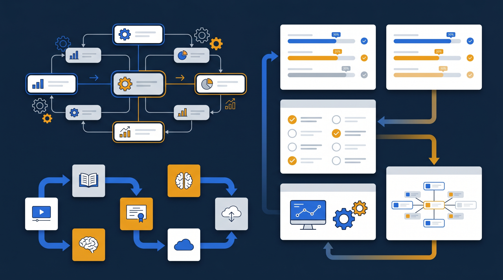
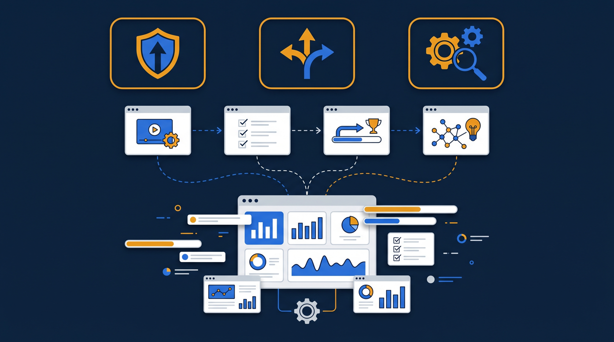
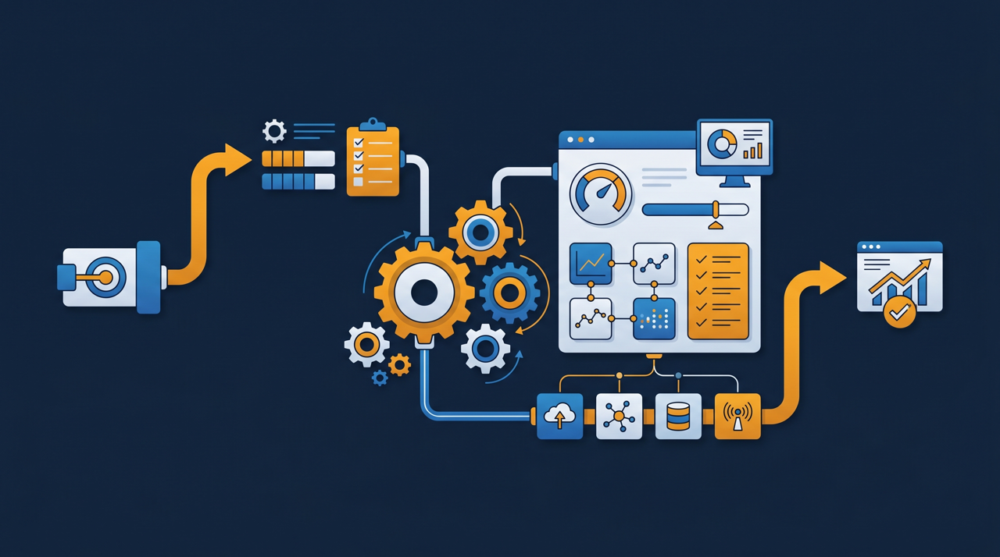

「同じ看板を掲げているのに、店によってスタッフの動きが違う」——多店舗・多拠点で事業を展開していると、必ずと言っていいほど出てくる悩みです。本部はしっかり教育しているつもりでも、現場では各店の店長やベテランが、それぞれのやり方で新人に教えている。気づけば、A店とB店で接客も品質も別物になっている。この記事では、拠点ごとに教育がばらついてしまう理由と、同じ研修を全拠点へ届けて品質を揃えていく方法を、現場目線で整理します。

多店舗・多拠点の研修管理とは？まず全体像を整理する
多店舗・多拠点の研修管理とは、複数の店舗や事業所を持つ会社が、それぞれの現場で行う教育の中身・品質・進み具合を、本部側でまとめて把握し、揃えていく取り組みのことです。1店舗だけなら、店長が目の届く範囲で全員を教えられます。けれど店舗が5つ、10つと増えていくと、本部の手は現場まで届かなくなり、教育は各拠点に丸投げになりがちです。
ここで考えたいのは、お客様の視点です。チェーン店に行くお客様は、どの店舗でも同じ品質を期待していますよね。ところが現場では、店ごとに教え方が違うので、スタッフの動きにばらつきが出る。この「期待される均一さ」と「現場のばらつき」のギャップが、多拠点ビジネスの弱点になりやすいんです。研修管理は、このギャップを埋めるための取り組みだと考えると、全体像がつかみやすくなります。
たとえば、ある小売チェーンでは、本部が接客マニュアルを配っていました。それでも覆面調査をすると、店舗ごとの評価がかなり開いていたそうです。マニュアルがなかったわけではありません。「配っただけ」で、各店がどう教え、どこまで実践できているかを本部が把握できていなかった。研修管理とは、教材を配ることではなく、配った内容が現場で揃って実践されるところまで見届けることなんですよね。
なぜ拠点ごとに教育はばらついてしまうのか
拠点が増えると、なぜ教育が揃わなくなるのでしょうか。現場を見ていくと、原因はいくつかのパターンに整理できます。
1. 教えているのが、各拠点の人だから
多くの場合、新人教育は配属先の店長やベテランが担います。その人たちは、それぞれの経験や得意・不得意を持っています。Aさんは接客に厳しく、Bさんはオペレーションを重視する、というように、教える人の個性がそのまま新人に引き継がれていく。悪気はなくても、教える人が違えば、育つスタッフの色も変わってしまうわけです。
2. 本部から、各拠点の教育状況が見えない
本部にいると、各拠点で今どんな教育が行われているか、なかなか見えません。誰がどこまで覚えたのか、どの店が遅れているのかが分からないので、手の打ちようがない。問題に気づくのは、クレームが入ったり、覆面調査の点数が下がったりと、結果が出てからになりがちです。見えないものは管理できない、というのは、多拠点の教育でも当てはまります。
3. 集めて研修する負担が大きい
「だったら全員を本部に集めて一斉に教えればいい」と考えても、これがなかなか難しいんです。各拠点から人を集めれば、その間は現場が手薄になります。移動の時間も交通費もかかりますし、シフトの調整も骨が折れる。結局、集合研修は年に数回しか開けず、日々の教育は各拠点任せに戻ってしまう。集めることのコストの高さが、ばらつきを固定化させている面もあります。

ある飲食チェーンの本部担当者は、「新メニューの作り方を全店に揃えたいのに、伝言ゲームのように店ごとに少しずつ変わっていく」と話していました。本部が一度集めて教えても、その場にいなかったスタッフには店長が又聞きで教える。そのうちに、最初に伝えたはずの分量や手順が、店ごとに微妙にずれていく。集めて教える方式には、こうした「伝わり方の劣化」がつきまといます。
同じ研修を全拠点へ届けて、ばらつきをなくす
では、どうすれば拠点間のばらつきを抑えられるのか。鍵になるのは、「教える内容そのものを揃えてしまう」という発想です。各拠点の人に教え方を任せるのではなく、本部が作った同じ研修コンテンツを、全拠点へそのまま届ける。これができると、教える人が違ってもスタートラインが揃います。
その手段として現実的なのが、研修を動画やeラーニングにして、学習管理システム(LMS)から一斉配信することです。本部が一番うまい人のやり方を撮って教材にすれば、全拠点のスタッフが、同じ映像を、自分のタイミングで学べます。集めなくても、揃う。これが多拠点の研修管理で大きく効いてくる点です。
- 教える内容が全拠点で揃い、店舗による品質差が縮まりやすい
- 集合研修のための移動・日程調整・交通費の負担を減らせる
- 新人が入ったその日から、決まった教材で学び始められる
- 新メニューや手順変更を、全拠点へ同時に・同じ内容で届けられる
- 各拠点が「又聞き」で伝える劣化を防ぎやすい
特に大きいのが、変更を同時に届けられることです。先ほどの新メニューの例で言えば、本部が手順動画を1本撮って配信すれば、全店のスタッフが同じ映像を見て、同じ作り方を覚えられます。伝言ゲームによるずれが起きません。手順が変わったときも、動画を差し替えるだけで全拠点に反映できる。この「同時・同内容」は、人を介した口頭の伝達では実現しにくいものです。
もう一つ見逃せないのが、新人が入った日からすぐ学べることです。多拠点だと、配属のタイミングは拠点ごとにばらばらです。集合研修方式だと、次の開催まで新人を待たせるか、店長が急いで個別に教えるかになりがちで、ここでも教え方の差が生まれます。配信方式なら、新人が入ったその日に、決まった教材で学び始められる。誰がいつ入っても、同じスタートラインに立てるわけです。立ち上がりのばらつきは、入り口の段階から生まれていることが多いので、ここを揃えられる意味は小さくありません。
ある美容関連のチェーンでは、接客の基本所作を本部が動画化し、全店に配信しました。それまでは新人が入るたびに各店の先輩が手本を見せていたため、店ごとに少しずつ所作が違っていたそうです。同じ動画を全員が見るようにしてから、どの店でも所作の土台が揃い始め、店舗間の評価のばらつきが縮まっていったといいます。教える人ではなく、教材を揃える——この発想の転換が効いた例です。
共通の研修と、拠点ごとの研修を分けて配る
とはいえ、全拠点でまったく同じ研修だけでよいかというと、そうとも限りません。都市部の大型店と地方の小型店では求められることが違いますし、社員とアルバイトでは必要な知識も変わります。すべてを共通にしようとすると、かえって現場に合わなくなることもあるんです。
そこで扱いやすいのが、研修を「全拠点共通」と「拠点・役割ごと」に分けて配る考え方です。学習管理システムでは、対象者ごとに見せる教材を切り替えられるので、共通部分は全員に、個別部分は該当者にだけ届ける、という運用がしやすくなります。
| 研修の種類 | 配信の対象 | 内容の例 |
|---|---|---|
| 全拠点共通 | 全スタッフ | 接客の基本・身だしなみ・衛生管理・コンプライアンス |
| 業態・拠点別 | 該当拠点のスタッフ | 大型店向けのオペレーション・地域限定メニュー |
| 役割別 | 店長・リーダー等 | 売上管理・シフト作成・部下の育成 |
| 新人向け | 入社・配属直後の人 | 立ち上がりに必要な基本動作・最初の1週間の流れ |
このように層を分けておくと、「全員に揃えたい部分」と「現場に合わせたい部分」を両立できます。基本は全店で揃えつつ、現場ごとの事情には個別研修で対応する。一律にするのではなく、揃えるところと変えるところを意識的に分けるのが、多拠点ならではの設計になります。
ところで、こうした分け方は最初から完璧に決めなくて構いません。まずは「全拠点で絶対に揃えたい基本」を共通研修として配信し、運用しながら「これは拠点別にしたほうがいい」という部分を切り出していく。動かしながら整えていくほうが、現場の実情に合った形に落ち着きやすい傾向があります。
受講記録で「配っただけ」を防ぐ

研修を配信できるようになっても、それで終わりではありません。冒頭の小売チェーンの例のように、「配っただけ」では現場は揃わないからです。配った内容が、各拠点で本当に学ばれているか——ここを確認できて初めて、研修管理は機能します。
学習管理システムを使えば、どの拠点の誰が、どの研修を、どこまで学んだかを記録できます。本部は、進んでいる拠点と遅れている拠点を一覧で把握でき、遅れているところにだけ声をかければよくなる。各拠点に毎回「研修やってますか?」と問い合わせる手間も減ります。見えなかった現場の教育状況が、数字で見えるようになるわけです。
そしてこの記録は、教育の改善にも役立ちます。多くのスタッフが同じ確認テストの同じ問題でつまずいているなら、その部分の教え方に課題があるサインかもしれません。記録をたどることで、「どこが伝わりにくいか」を本部が把握でき、教材そのものを良くしていける。配って、受講状況を見て、教材を直す。この流れが回り出すと、研修は配信した瞬間より、運用するほどに良くなっていきます。
加えて、受講記録が整理されていることには、別の利点もあります。研修を実施した証明がしやすくなる点です。たとえば人材開発支援助成金のように、訓練の実施を裏づける書類が求められる制度を活用する場面でも、誰がいつ何を学んだかの記録が残っていると、手続きを進めやすくなります。多拠点で人数が多いほど、受講管理を仕組みで行えることの価値は大きくなります。
多拠点研修を仕組みにすると、現場はどう変わるか
ここで、研修管理が仕組み化された多拠点の現場をイメージしてみましょう。新しいスタッフが入ったら、配属先に関係なく、まず決まった共通研修の動画を見ます。店長は、付きっきりで一から教える代わりに、動画で学んだ内容の実践を見てあげればよくなる。教える総量が減り、店長は本来の店舗運営に時間を使えるようになります。
新メニューや新しいオペレーションを導入するときも、本部が動画を1本配信すれば、全拠点が同じタイミングで同じ内容を学べます。店ごとに説明会を開く必要がなく、伝わり方の劣化も起きにくい。本部は受講状況を見て、まだ見ていない拠点にだけリマインドを送ればよい。これまで電話やメールで各店に確認していた手間が、画面を見るだけで済むようになるわけです。
そしてお客様から見たときの変化が、最も本質的かもしれません。どの店舗に行っても、スタッフの動きや接客の質が揃ってくる。「あの店は良かったのに、こっちの店は残念」というばらつきが減れば、ブランド全体への信頼につながります。多拠点の研修管理は、現場の負担を減らすだけでなく、お客様が受け取る体験を揃えるための取り組みでもあるんですよね。
まとめ：揃えるところを決め、配信と記録で支える
多店舗・多拠点で教育がばらつくのは、各拠点の人が、それぞれのやり方で教えているからです。本部から現場が見えず、集めて教えるのも負担が大きい。この状態を、各拠点の善意や努力だけで解消しようとすると、なかなか揃いません。
鍵になるのは、教える内容そのものを揃えてしまうことです。本部が作った同じ研修コンテンツを、動画やeラーニングにして全拠点へ配信する。全拠点共通の研修と、拠点や役割ごとの研修を分けて配り、揃えるところと現場に合わせるところを意識的に切り分ける。そして、学習管理システムで受講記録を残し、「配っただけ」で終わらせず、現場で学ばれているところまで見届ける。
この三つ——揃える・配る・記録する——がそろうと、教育は各拠点任せではなく、本部が支える仕組みへと変わっていきます。まずは「全拠点で絶対に揃えたい基本」を1つ選び、それを動画にして全店へ届けてみるところから始めてみてください。小さく揃え始めて、運用しながら広げていく。それが、拠点が増えても崩れない教育への現実的な一歩になります。
よくある質問
複数の店舗や拠点を持つ企業が、それぞれの現場で行う教育の内容・品質・進み具合を、本部側でまとめて把握し、揃えていく取り組みのことです。拠点ごとに教え方が分かれてしまう状態を、共通の研修コンテンツと記録の仕組みで整えていく考え方を指します。
各拠点で店長やベテランが口頭で教えていると、教える内容も順番も基準も人によって変わるためです。さらに、本部からは各拠点の教育状況が見えにくく、どこが進んでいてどこが遅れているか把握しづらいことも、ばらつきが固定化する原因になります。
集めなくても揃える方法があります。研修内容を動画やeラーニングにして、学習管理システム（LMS）から全拠点へ配信すれば、各拠点のスタッフが自分のタイミングで同じ内容を学べます。移動や日程調整の負担をかけずに、教える中身を揃えられる点が利点です。
全店舗で共通の研修と、店舗や役割ごとに必要な研修を分けて配信する方法が扱いやすいです。学習管理システムでは、対象者ごとに見せる教材を切り替えられるため、共通部分は全員に、個別部分は該当者にだけ届ける、という運用がしやすくなります。
受講記録を残せる仕組みを使えば、どの拠点の誰がどこまで学んだかを本部から把握できます。進んでいない拠点だけに声をかける、といった運用がしやすくなり、各拠点に毎回問い合わせる手間を減らせる傾向があります。
訓練の内容や進め方によっては、人材開発支援助成金のように、訓練にかかった経費や賃金の一部を国が助成する制度を活用できる場合があります。対象になるかは訓練の形式や手続きの要件によって変わるため、詳細は厚生労働省の公式情報や窓口でご確認ください。